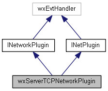
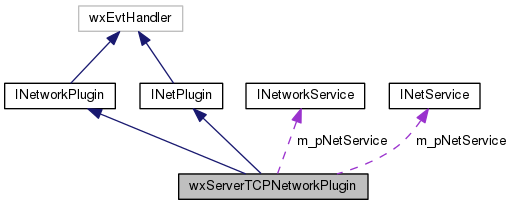

|
|
Version: 0.6.0 |


wxServerTCPNetworkPlugin Class Reference
A Server side TCPNetworkPlugin. More...
#include <tcp.h>
Inheritance diagram for wxServerTCPNetworkPlugin:

Collaboration diagram for wxServerTCPNetworkPlugin:

Public Member Functions | |
| bool | CreateUDPNotifier (void) |
| bool | CreateListenSocket (void) |
| virtual bool | Start (INetService *pNetService, const wxXmlNode *pConfig) |
| virtual bool | Stop (void) |
| virtual void | OnUDPServerEvent (wxSocketEvent &event) |
| virtual void | OnTCPServerEvent (wxSocketEvent &event) |
| bool | CreateUDPNotifier (void) |
| bool | CreateListenSocket (void) |
| virtual bool | Start (INetworkService *pNetService, wxXmlNode *pConfig) |
| virtual bool | Stop (void) |
| virtual void | OnUDPServerEvent (wxSocketEvent &event) |
| virtual void | OnTCPServerEvent (wxSocketEvent &event) |
 Public Member Functions inherited from INetworkPlugin Public Member Functions inherited from INetworkPlugin | |
| virtual bool | Start (wxGISNetworkService *pNetService, wxXmlNode *pConfig)=0 |
Protected Attributes | |
| int | m_nPort |
| int | m_nAdvPort |
| wxString | m_sAddr |
| INetService * | m_pNetService |
| wxDatagramSocket * | m_udp_socket |
| wxSocketServer * | m_listeningSocket |
| INetworkService * | m_pNetService |
Detailed Description
The documentation for this class was generated from the following files:
- /home/bishop/work/projects/nextgismanager/include/wxgis/net/tcp.h
- /home/bishop/work/projects/nextgismanager/include/wxgissrv/0srv_net/tcpnetworkplugin.h
- /home/bishop/work/projects/nextgismanager/src/net/tcp.cpp
- Generated on Fri Sep 26 2014 01:11:05 for ngm by
 1.8.6
1.8.6